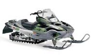

- Inicio
- Motos Deportivas
- Motos Naked
- Motos Deportivas Junior
- Calle
- Motos tipo Turismo, Sport-Turismo y Trails
- Motos Custom y Choppers
- Motos Scooters, MaxiScooters y Ciclomotores
- Motos Cross y Enduro
- Motos Supermoto
Tipos de motos
- Cuatrimotos y Motos Triciclos
- Motos de Nieve
- Minimotos o "pocket Bikes"
- Motos de "trial"
Otras motos


Motos de Nieve
Uso en nieve y hielo, de forma deportiva o transporte.
La moto de nieve es una suerte de trineo motorizado. Se monta como una moto y tiene como medio de propulsión una oruga de goma mientras que su dirección es maniobrada con esquíes. Están diseñados para andar en la nieve o hielo y no requieren un camino o sendero. Estos vehículos son de gran cilindrada y muy potentes. Por ejemplo, en promedio las motos de nieve último modelo pueden pasar de 0 a 100 Km/H en 4 segundos. Otra manifestación del poder de estas motos son las carreras que se realizan en Noruega en las que se demostró que estas motos pueden patinar en el agua si se va lo suficientemente rápido.